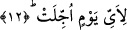

11. Peygamberlerin (ümmetleri hakkında şâhidlik) vakti tâyin edildiği zaman
(artık kıyâmet kopmuştur).
“Peygamberlere vakit tâyin edildiği zaman” yâni ümmetlerine şâhidlik etmek üzere
gelecekleri vakit belirlendiği zaman. Bu zaman geldiğinde ve hazır olduğunda belli olur.
Çünkü böyle bir zaman gelmeden önce, peygamberler için belirlenmez. Zira bu zamanın
hangi zaman olduğunun bilgisi sâdece Allah’a âiddir. Bir başka ifâdeyle;
peygamberlerin gelecek oldukları vaktin onlara beyân edilmesi, kıyâmetin alâmetleri
cümlesindendir. Şöyle ki; bu belirleme ve tâyin dünyada olmayacaktır. Zira dünyada
iken peygamberlerin ümmetlerine şâhidlik etmeleri için gelecekleri bir zaman tâyin
edilmiş değildir. Bu zaman gelip çattığında peygamberlere: “şehâdet için geliniz, bunun
vakti gelmiştir” denilecektir.
Biz yukarda üzerinde durduğumuz âyetin anlamı olarak “peygamberlere ümmetlerine
şâhidlik etmek üzere gelecekleri zaman belirlendiğinde” şeklinde bir anlam vermiştik.
Bu âyete şöyle bir anlam vermek de mümkündür: “Peygamberler bekledikleri zamana
ulaştıklarında”... Bu zaman hâliyle kıyâmet günüdür. Çünkü âyette yer alan “tevkît”
Arapçada herhangi birşeyi belirlemek, zamanını tâyin etmek anlamına gelebildiği gibi
herhangi bir şeyi belirlenmiş vaktine ulaştırmak anlamına da gelir. Birinci anlama göre
zamanın tâyin edilmesi zâtlarla ilgili bir kavram değildir. Zâtlar için bu kavram
herhangi bir kelime takdir etmeksizin düşünülemez. Çünkü vakti tâyin edilen cesedler,
maddî varlıklar değil, olaylardır. Peygamberlerin vakti tâbiri, peygamberlerin bizzat
şahsiyetleri değil, gelme zamanlarıdır. Çünkü şahsiyetler oldukları yerde dururlar.
Bunlar için bir vakit tâyin etmek düşünülemez. Oysa zaman içinde durmadan yenilenen
zamanla ilgili kavramlar için bir vakit belirlemek mümkündür. Âlimlerin bu konudaki
görüşleri böyledir.
Sa’dî Müftî der ki: İki anlamdan ikincisinin cesedler açısından herhangi bir kelime
takdîri yapılmadan düşünülmesi kolayca anlaşılabilecek bir husustur. Bu âyet-i kırâat
âlimlerinden Ebû Amr “vukkıtet” şeklinde aslına uygun okumuştur. Çünkü kelime “vakt”
kökünden türemiştir. Diğer kırâat âlimleri ise vavı hemzeye çevirerek burada olduğu
gibi “ukkitet” şeklinde okumuşlardır.
Bu âyet-i kerîme kalb, sırr ve tâyin elçilerine, organların ümmetine şâhidlik
edeceklerine işâret etmektedir.
12. (Bu alâmetler) hangi vakte ertelenmiştir?
Bu cümlenin başında gizli bir “kıyle/denilmiştir” ifâdesi mevcuddur. Bu âyet-i kerîme
yukarıda geçen, “peygamberlere vakit tâyin edildiği zaman” ifâdesinin başındaki
“iza” kelimesinin cevabıdır. Buna göre ifâdeyi tam şekliyle yansıtmamız gerekirse